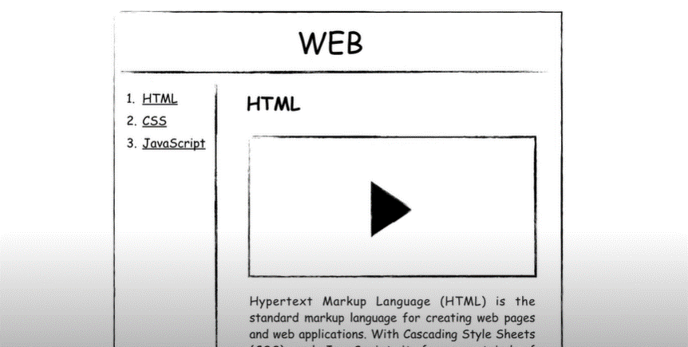

2.10.1. anchor 주요 속성
href - 링크의 목적지 URL을 지정. 외부 웹 페이지, 내부 웹 페이지, 파일경로, 이메일 주소등 목적지 지정가능
target - 링크를 어떠한 방식으로 열지 정함.
_black : 새창
_self : 현재창
_parent : 현재 페이지의 부모프레임 에서 열림
_top : 현재 모든 프레임을 무시하고, 링크된 페이지를 전체 브라우저 최상위에서 열도록 함
rel - 링크의 관계를 지정함. noopener이나 noreferrer 를 사용하여 보안 및 성능 이슈를 방지하는 용도
출처: https://strap.tistory.com/entry/HTML [공삼:티스토리]
3. 링크와 하이퍼링크의 차이점
링크 (Link) 와 하이퍼링크 (hyperLink)는 웹 개발과 웹 페이지에서 사용되는 용어로, 둘 다 다른 웹페이지나 문서로 연결하는 역할을 하지만 미묘한 차이가 있다.
3.1. 링크 (Link)
일반적으로 문서 내의 다른부분으로 연결하는 것을 말한다.
웹 페이지 내에서 특정부분으로 스크롤하거나 같은 문서 내의 다른 섹션으로 이동하는데 사용된다.
보통 웹 페이지내에서의 내비게이션을 담당하며 나타내는 말이다.
3.2. 하이퍼링크 (hyperLink)
하이퍼링크는 더 넓은 의미로, 웹페이지나 다른 문서로 연결하는 모든 링크를 포함한다. 하이퍼링크는 보통 다른 웹사이트, 외부 문서, 이미지, 동영상등과 같이 웹 페이지 외부로 나가는 링크를 의미한다.
즉, 하이퍼링크는 모든종류의 링크를 통칭하는 개념으로 사용한다.
출처: https://strap.tistory.com/entry/HTML [공삼:티스토리]
css파일을 사용할 때 head 부분에서 link를 사용해 파일을 연결한다.
이때 우리는 단순히 link만 사용하는게 아니라
rel relation 어떠한 파일을 연결할 때 이 파일과 현재 파일의 관계를 정의한다.
그래서 = 다음에 불러올 파일을 현파일과 어떤 관계로 정의할 것인지 쓴다.
href hyper reference 하이퍼 참조를 의미한다.
참조할 하이퍼(하이퍼링크)를 의미한다.
그래서 = 다음에 참조할 파일명을 이 다음에 쓴다.
HTML이란 무엇인가?
HyperText Markup Language (HTML) is the standard markup language for creating webpages and web applicarions.
Web browsers receive HTML documents from a web server or from local storage and render them into multimedia web pages.
HTML describes the structure of a web page semantically and originally included cues for the appearance of the document.HTML as used on the current web is likely to be either treated as XML, by being XHTML, or as HTML5; in either case the parsing of document tags into Document Object Model (DOM) elements is simplified compared to legacy HTML systems. Once the DOM of elements is obtained, behavior at higher levels of interface (example: screen rendering) is identical or nearly so.
생활코딩 WEB
WEB1-1 소개
코딩, 웹, 인터넷, 컴퓨터, 상상력으로 문제를 해결한다.
어떤 문제가 우리 삶에서 중요하고 심각할수록 그 문제를 해결해주는 공부는 문제로부터 우리를 해방시켜줄것이다.
반대로 그 문제가 우리 삶과 동떨어져있고, 사소하다면 공부자체가 삶의 문제가 되어서 우리를 해방시키기는 커녕 억압할 것이다.
자신의 뇌를 이기는 장사는 없다.
공부의 효용을 뇌에게 자주 증명해보인다면 우리의 뇌는 공부를 좋아하는 뇌가 될 것이다.
공부를 좋아하게 된다면 노력하지 않아도 우리는 공부거리를 찾게 될 것이다.
WEB1-2 동기
처해있던 상황, 마음 상태
프로젝트의 동기
WEB1-3 기획
우리가 무엇인가를 만들기 전에 내가 무엇을 만들 것인가를 미리 상상하고 계획하고, 구체화하는 과정이 필요하다.
만들기 전에 무엇을 만들 것인가를 설계하는 그려보는 과정을 기획이라고 한다.
코딩 수업과 내용을 잘 정리정돈 할 수 있는 웹사이트를 그림으로 한번 그려본다.
WEB
-----
목차
1. html
2. CSS
3. Javascript
WEB1-4 코딩과 HTML
어떤 쪽이 사람이 하는 일이고, 어떤 쪽이 기계가 하는 일인가를 분리 해서 생각해 보는 것이다.
어떤 것이 원인이고, 어떤 것이 결과인지 추론해 보는 것이다.
오른쪽이 사람이 하는 일이면서 원인이고, 그것에 대한 결과가 왼쪽이면서 기계가 하는 일이다.
사람이 하는 일, 원인을 부르는 여러가지 표현이 있다.
부호 또는 신호라는 의미에서 코드
, 원천 이라는 뜻의 소스
, 기계도 이해할 수 있고 사람도 이해할 수 있는 공통의 약속이라는 의미에서 컴퓨터언어
기계가 하는 일, 결과를 부르는 여러가지 표현이 있다.
애플리케이션
, 응용프로그램
, 앱
, 프로그램
, 웹페이지
, 웹페이지가 모여있으면 웹사이트
다양한 표현들은 같은 대상을 바라보는 관점에 따라서 표현이 조금씩 달라지는 것에 불과
원인인 코드를 통해서 결과를 만든다는 것이 코딩을 이해하는 핵심
우리가 하고자 하는 일은 웹페이지를 만드는 것이다.
웹페이지를 만드는 코드는 HTML
HyperText Markup Language
HTML은 저작권이 없는 퍼블릭 도메인이다.
웹도 마찬가지로 웹을 만든 팀 버너스리는 웹을 어떠한 저작권도 존재하지 않는 완전한 자유를 의미하는
퍼블릭 도메인으로 선언했다.
이렇기 때문에 우리가 만든 웹 페이지를 여러 브라우저에서 똑같이 볼 수 있게 된 것이 바로 이러한 이유 때문이다.
웹은 특정 기업이 독점하는 기술 만큼 빨리 발전 하지는 못했지만, 웹은 특정 기업이 독점하지 않기때문에 오래간다.
WEB1-5 HTML코딩과 실습환경 준비
준비물
1. 웹 브라우저
2. 코드 편집기(에디터) - 메모장, atom이 대세였다가 visual studio code
vsc를 이용하여 웹페이지 파일을 만들 것이다.
바탕화면 또는 데스크탑에 web이라는 폴더를 만들고 그 폴더 안에 웹페이지들을 만들것이다.
웹 브라우저에서 ctrl+o 파일 열기
WEB1-6 기본문법 태그
자기 자신을 주인공으로 만들어라
웹페이지를 똑같이 만드는 건 그냥 따라가는 것에 불과하다.
우리의 삶에서 정말 중요한 여러가지 정보들이 있을 것이다.
그리고 그 정보를 누군가와 나누고 싶은 것들이 있을 것이다.
예를 들어, 우리 가족에 대한 정보, 내가 좋아하는 어떤 스타에 대한 정보, 내가 좋아하는 게임에 대한 정보 등으로
내용을 채워 가면서 수업을 따라간다면 공부가 훨씬 생동감 있을 것이다.
HTML이라는 언어의 문법에 맞게 작성된 소스나 코드를 원인으로 그 결과인 웹페이지가 나온다.
HTML 문법
<웹을 지배하는 가장 중요한 문법 - 태그>
- 웹을 지배하는 것은 인터넷을 지배하는 것이라고 볼 수 있을 만큼 정말 중요한 문법이다.
1. 다른 문자들과 구분되게 진하게 표시하는 방법 :
EX) HTML의 약자는 Hypertext Markup Language 이다.
2. 텍스트 밑에 밑줄치는 방법 : underline의
EX) HTML의 약자는 Hypertext Markup Language 이다.
앞에 있는 태그를 '열리는 태그', 뒤에 있는 태그를 '닫히는 태그'라고 한다.
뒤에 있는 태그는 앞에 있는 것과 뒤에 있는 것을 구분하기 위해서 뒤에 슬래시(/)를 붙인다는 것
옷을 사면 그 옷에 붙어 있는 딱지를 태그라고 한다
그 태그는 옷을 설명한다
strong태그는 감싸고 있는 텍스트를 진하게 표시해야한다라는 것을 설명한다.
HTML과 같은 언어를 만든 사람들은 저렇게 생긴 문법을 어떻게 설명할 것인가를 고민 했었다
그리고 저것의 이름을 정할때, 새로만든 단어보다 우리의 일상에서 이미 자주 쓰는 것중
저 문법과 성격이 유사한 것을 비유적으로 사용하기 때문에
용어가 어렵다면 사전을 찾아봐라. 그것이 어떤 뜻인지를 찾아보면 우리의 일상과 밀접한 관계에 있는 용어일 가능성이 많다.
컴퓨터 공학은 어떻게 보면 하나의 거대한 시라고 할 수 있다.
왜냐하면 물질을 기반으로 하지 않고, 논리적인 것을 기반으로 하기때문에 컴퓨터 공학에서 만든 것들을 사람들에게 설명해주고
또 사람들이 그것을 마치 손에 잡히는 것처럼 받아들이게 하기 위해서는 필연적으로 여러가지 비유와 은유를 쓸 수 밖에 없게 되는데
그것은 시와 굉장히 유사하다.
WEB1-7 혁명적인 변화
처음에 배우는 것은 너무나 쉽지만 제일 중요한 것이다.
처음에 배우는 것들은 가장 자주 사용되는 부품이면서 그 부품들을 결합해서 새로운 완제품을 만들어 내는 가장 자주 사용되는 결합 방법이기 때문이다.
인생은 태그를 배우기 전과 배우고 난 후로 나눌 수 있다.
W3C : 국제 민간 표준 기구, 웹을 만드는 곳
https://www.w3.org/ 홈페이지
홈페이지(사이트)가 어떤 코드를 만들어졌는지 보고 싶다면 마우스 우클릭 후, 페이지 소스 보기를 클릭한다.
우리는 이해할 수 없는 패턴이 나오면 불쾌해 하는 존재이다.
그 불쾌함을 없애고자 하는 그 방향성 덕분에 문명이 발전한 것이라고 본다.
이 코드를 HTML 태그라는 문법을 알기 전에 본 우리와 알고 난 이후에 본 우리는 완전히 다른 상태에 있다.
왜냐하면
W3C
태그를 봤을 때, 우리가 태그라는 문법을 배우기 전과 배운 후를 비교했을 때
h1이 어떤 태그인지는 모르지만 h1이 태그라는 것을 알 수 있다.
이전까진 내가 뭘 모르는지도 몰랐던 상황에서 내가 무엇을 모르는지는 아는 상태가 된 것이다.
무엇을 모르는지를 알면 검색할 수 있고, 질문할 수 있고, 태그에 대해서 대화할 수 있고, 궁금해할 수 있다.
그리고 우리는 h1이 어떤 태그인지 알아낼 수 있는 놀라운 시대에 우리가 살고 있다.
추천 검색어 "HTML h1 tag"
정의를 보기전에 우리가 지금 알고자하는 h1이 무엇인가를 좀 좁힌 다음에 정의를 보고 그것이 무엇인지를 확신하는 것이 더 좋은 방향이다.
그러려면 제일 먼저 예제를 보는것이 좋다.
W1C
W2C
W3C
W4C
W5C
W6C
W1C
추론을 통해서 h1이 무엇인가를 일단 짐작하는 것이 귀한일이다.
강의에서 h1은 무엇입니다라고 알려주는 것은 내가 스스로 알아낸 것이 아니다.
하지만 내가 h1이 무엇인가를 궁리하면서 추론하는 과정은 내가 직접 스스로 알아낸 것이다.
놀라운 시대에 살고 있다는 것을 낯설게 바라보는 것이다.
웹과 같은 기술이 등장하지 않았다면 이런 웹페이지가 없었을 것이고, 또 웹페이지가 없었다면 이 세상에 검색 엔진이 존재하지 않았을것이다.
검색 엔진이 존재하지 않는 시대였다면 무엇인가를 알고싶다면 시간이 오래걸렸을 것이다.
3. 텍스트의 제목(진하게, 줄바꿈)을 표현하는 방법 : heading의 ~ 숫자가 커질수록 제목이 작아짐
태그가 무엇인지 알고 있으면 나는 모든 태그를 다 알고 있는 것과 다름없다.
WEB1-8 통계에 기반한 학습
현재 HTML에는 150개 이상의 태그가 존재한다.
어떤 태그들은 지식이 있어야 이해할 수 있는 것들이 있다.
통계를 보여주면서 어떤 방향으로 공부해야될지 스스로 결정할 수있도록 한다.
기본적으로 밑천으로서 가지고 있을 만한 태그가 무엇인가를 스스로 판단할 수 있도록 하기위한 수업
http://www.advancedwebranking.com/html/
공부를 할때 항상 통계를 기반으로 해서 무엇을 공부할까를 판단하기
WEB1-9 br vs p
br, p 태그는 서로 경쟁관계에 있다.
어떤 경쟁관계에 있는가를 통해서 정보로서의 웹이라는 관점에 대해서 생각해보는 계기
css를 지배하는 혁명적인 규칙을 알아보기
4. 줄바꿈을 표현하는 방법 : line-break의
html new line tag
에디터에서 줄바꿈을 해봤자 HTML에서는 적용이 되지 않는다. 그러므로 줄바꿈을 표현하려면 br 태그를 사용하면된다.
어디서부터 어디까지가 h1이다라는 것을 설명하기 위해서 열리는 태그와 닫히는 태그가 쌍으로 존재했다.
하지만 br 태그는 단지 줄바꿈이라고 하는 시각적인 의미만을 가지고 있기 때문에 무언가를 감쌀필요가 없어 닫지않는다.
5. 단락을 표현하는 방법 : paragraph의
p태그는 br태그와 다르게 어디서부터 어디까지가 한 단락인지를 표현할 수 있기 때문에 열리는태그와 닫히는 태그가 존재한다.
p태그를 사용하는 것이 웹페이지를 좀 더 정보로서 가치 있게 만들기 때문이다. 설정한 만큼 단락이다라는 것을 의미론적으로 표현해 줄 수 있다.
br태그는 단지 줄바꿈이다.
정보로서 좀 더 가치있는 HTML이 된다는 것이 왜 중요한지 차차 알게 될 것이다.
p태그의 단점은 br태그는 줄바꿈을 많이하고 싶으면 br태그를 여러번 사용하면 되지만
p태그는 정해져 있는 여백 만큼이 벌어지기 때문에 시각적으로는 자유도가 떨어진다.
시각적인 자유도를 보완하기 위해서 css라는 기술이 있다.
css에서 태그와 태그 사이의 여백을 나타내는 코드가 있다.
html속성을 나타내는 css라는 html과는 완전히 다른 컴퓨터 언어의 문법이 들어오게 약속되어 있다.
style 이라는 html의 속성을 쓴다.
속성에는 태그와 태그 사이의 여백 margin을 사용한다.
해당하는 단락에 위쪽 여백을 두고 싶으면 margin-top:40px
px 픽셀은 컴퓨터 상에서 사용되는 단위이다.
이렇게 하면 단락 사이에 40px만큼의 여백을 사용할 수 있게된다.
정교하게 원하는 만큼 여백을 사용 할 수 있다.
*
시각적인 요소는 css를 사용하면 되므로 의미에 맞는 태그를 사용하는것이 더 좋은 방법이다.
WEB1-10 html이 중요한 이유
응용으로 가는 과정으로서 기초가 중요하다.
기초만으로도 할 수 있는 일이 많다.
편집기를 이용해서 글을 쓴다는 것은 내부적으로 HTML 코드를 생산하는 행위라는 것을 알 수 있다.
일반인이 제목을 작성하는 방식과 지식인이 제목을 작성하는 방식은 다르다.
일반인 : coding
지식인 :
coding
검색엔진은 전 세계에 있는 모든 웹페이지를 다운로드 받아서 그 웹페이지의 HTML코드를 분석한다.
그리고 그 코드에 있는 내용에서 이 웹페이지의 제목은 뭐구나, 이 웹페이지는 어떤 내용들을 가지고 있구나
이런 것들을 바로 이 태그를 근거로 해서 정리정돈해놓는다.
그리고 그 검색엔진은 일반인의 웹페이지 1억 개에 대해서도 알고 있고, 지식인의 웹페이지 1억 개에 대해서도 알고 있는데
사용자가 검색엔진에 coding이라고 검색했을때, 제목이 coding인 사이트와 시각적으로만 제목처럼 보이는 coding이라는 정보를 가지고 있는 사이트 중에
검색엔진은 제목이 coding이라는 사이트가 보여줄 때 좀 더 우선순위를 가진다.
현대사회에서 검색엔진이 차지하는 위상이 너무나 크기 때문에 검색엔진에 노출이 안된다는 것은 현실(실질)적으로 존재하지 않는다 라는 의미를 갖는다.
그러므로 우리가 웹을 만들면서 중요한 것은 웹이 갖고 있는 본래의 의미, 정보라는 것을 탄탄히 하는 것이 훨씬 더 중요한 이슈가 된다.
HTML을 의미에 맞게 정확하게 사용한다 라는 것은 중요한 의미이다.
웹의 핵심적인 철학은 접근성이다.
웹은 모든 운영체제에서 동작하고, 웹 페이지의 소스코드는 누구나 볼 수 있고, 웹은 저작권이 없는 공공재이다.
이것이 웹을 다른 기술들과 구별되는 특별한 기술로 만드는 것이다.
개방성, 접근성(accessibility)
웹이 중요하게 생각하는 접근성 중에 하나는 신체적인 장애가 있는 분들도 정보로부터 소외되지 않도록 노력해야 한다는 것이다.
예를 들어, 시각장애인분들은 시각적인 정보를 청각화해서 정보를 접하게 된다.
스크린 리더라는 프로그램이나 각종 보조장치를 이용해서 정보를 접하게 된다.
웹페이지를 만들때 문자까지 통으로 이미지로 만든다면 시각장애가 있는 분들에게는 존재하지 않는 정보가 된다.
시각장애인을 배려하기 위한 여러가지 기술과 테크닉이 있습니다만 그 중요한 첫 출발은 HTML의 태그를 정확히 알고, 의미에 맞게 사용하는 것이다.
우리가 이렇게 한다면 우리도 모르게 누군가에겐 큰 도움을 주고 있는 것이다.
HTML은 비즈니스적인 측면에서 중요할 뿐만 아니라 휴머니즘적인 측면에서도 매우 중요한 기술이다.
WEB1-11 최후의 문법 속성 & img
속성이라는 태그의 심화된 문법까지 배우면 HTML의 모든 문법을 마스터했다라고 얘기할 수 있다.
6. 이미지를 웹페이지에 포함시키는 방법 :
태그의 이름만으로는 정보가 부족할 때가 있다.
이런 속성을 통해서 더 많은 의미를 부가할 수 있다.
그래서 어떤 이미지인지를 알려주기로 약속된 속성(attribute)이 source(src) 이다.
속성은 위치는 상관이 없다. 아무 위치에나 쓰면 된다.

우리가 원하는 이미지의 주소를 적어주면 웹브라우저는 저 위치에다가 이미지로 표현해준다.
저작권에 구애받지 않고 사용할 수 있는 공공재
https://unsplash.comhttps://burst.shopify.com/https://pixabay.com/https://www.pexels.com/ko-kr/https://colorhunt.co/
WEB1-12 부모자식과 목록
이렇게 태그가 서로 포함관계로 연관되어 있을 때, 포함하고 있는 태그를 부모태그,
포함된 태그를 자식 태그라고 부른다.
HTML에 있는 여러 태그들은 서로 부모 자식 관계가 막 바뀐다.
어떤 태그들은 자식이 있는 곳에 항상 부모가 있고
, 부모가 있는 곳에 항상 특정한 자식 태그가 있는 태그들이 있다.
목차(목록)를 만들면서 부모 자식 관계에 해당되는 태그를 살펴본다.
7. 목차를 표현하는 방법 : List
8. 목차를 표현할때 구분하는 방법 : Unordered List
li태그의 부모
li와 같은 항목들은 그 항목이 어디서부터 어디까지가 서로 연관된 항목인지를 경계를 짓기위한,
그룹핑을 하기 위한 부모 태그가 필요한 것이다.
그래서 li태그는 반드시 부모 태그를 갖고 있다.
그리고 ul태그는 반드시 자식 태그를 갖고 있다.
1. HTML
2. CSS
3. Javascript
egoing
k8805
youbin
코딩할때 극단적 사고가 필요하다.
충분히 불행할때(데이터가 많을 때) 코딩을 한다.
1억개 데이터가 있으면 하나하나 카운팅을 할 수 없다.
만약 중간에 삭제데이터가 있으면 다시 카운팅 할 수 없는것
9. 목차를 표현할 때 앞에 자동으로 숫자로 넘버링 표현하는 방법: Ordered List
HTML
CSS
Javascript
egoing
k8805
youbin
10. 표를 작성할때 표현하는 방법 : Table
tr은 li와(2대가 같이다님) 다르게 3대가 같이 다닌다.
head
98.1%
body
97.9%
html
97.9%
WEB1-13 문서의구조와 슈퍼스타들
HTML의 문법을 마스터 했다 = 문장을 완성하는 법을 마스터했다.
문장이 모이면 페이지가 된다. 페이지가 모이면 책이되고, 책에는 표지가 있고
표지에는 제목과 저자가 표기된다.
이처럼 정보가 많아짐에 따라서 그 정보를 잘 정리 정돈하기 위한 체계, 혹은 구조라는 것이 필요하다.
구조를 만드는 방법을 살펴보도록 한다.
이웃들은 내용을 잘 표현하는 제목을 표시하고 있고, 우리는 파일명이 제목이다.
11. 제목을 표시하는 방법, WEB - html
title 태그를 사용하면 웹페이지의 제목을 사용자에게 명시적으로 알려줄 수 있을 뿐만 아니라
검색엔진과 같은 기계들은 바로 이 title 태그를, 책으로 치면 책 표지와 같은 정보로 사용한다.
웹페이지를 만들 때, title이라는 태그를 쓰지 않는 것은 굉장한 손해를 보는 것이다.
HTML이란 무엇인가?
이렇게 했을 때 한국어 문자와 실제로 출력된 결과가 다르다. (한국어가 깨져서 나옴)
정보를 이렇게 글씨로 작성하면 그대로가 컴퓨터에 저장되는 것이 아니다.
컴퓨터는 모든 정보를 0 아니면 1로 최종적으로 저장한다.
그런데 0과 1을 어떻게 저장할 것인지에 대한 여러가지 약속들이 존재하는데
그 약속중의 하나가 밑에 있는 utf-8이다.
현재 우리가 작성한 이 파일은 utf-8이라는 방식으로 저장된 상태이다.
그렇다면 우리가 작성한 이 파일을 웹브라우저가 열 때도 utf-8로 열어야 문제가 없을 것이다.
그래서 웹브라우저에게 이 웹페이지를 열 때는 utf-8로 열라고 얘기할 때는
이렇게 한다.
이러면 글씨가 안깨진다
여기서 charset은 character는 문자라는 뜻이고, set은 규칙이라는 뜻이다.
즉, utf-8로 문서를 읽어라 라고 우리가 브라우저에게 얘기를 해준 것이다.
WEB - html
본문의 제목이 무엇인지를 설명하고 있다.
이 본문이 utf-8이라는 방식으로 저장되어 있다 라는 것을 설명한다.
HTML을 만든사람들은 본문을 body라는 태그로 묶기로 약속했다.
그리고 본문을 설명하는 태그는 head태그로 묶기로 약속했다.
HTML에 있는 모든 태그는 head태그 또는 body태그 이 둘중에 하나 아래에 놓이게 된다.
그런점에서 head태그와 body태그는 상당히 고위직 태그라고 할 수 있다.
그리고 이 고위직 태그들을 감싸는 단 하나의 최고위층 태그가 있는데 html이라는 태그이다.
html태그 위에 관용적으로 이 문서는 HTML이다 라는 뜻에서 이라고 쓰면된다.
슈퍼스타에 해당되는 태그들을 배움으로써 전세계에 있는 거의 모든 웹 페이지들이 가지고 있는 구조를 파악하게 된것이다.
우리가 공부를 했을 때
얻을 수 있는 중요한 효용으로 눈이 밝아진다고 생각한다.
옛날에는 보이지 않았던 것이 보이기 시작한다.
이렇게 HTML의 구조를 작성하는 방법을 살펴보고, 그 과정에서 빈도수가 높은 태그들을 살펴봄
WEB1-14 HTML 태그의 제왕
우리는 지금까지 태그를 결합하는 방법을 완전히 마스터했고, 문서를 만드는 방법을 충분히 자세히 살펴봤다.
2개의 혁명적 순간이 있다. 태그라는 문법을 배운 순간, 설명 들을 태그를 알게 된 순간이다
태그가 웹의 왕국이라면 이 태그는 왕국의 제왕이다
현대의 HTML은 150여 개 태그로 이루어져 있지만, 이들 모두 이 태그 아래에 있다.
검색 엔진들은 이 태그 덕분에 전 세계의 웹을 항해하면서 웹페이지를 발견할 수 있고, 이 태그 덕분에 최고의 검색 결과를 만들 수 있었다.
이 태그가 없다면 검색엔진은 존재하지 않는다.
이 태그가 없다면 전세계 모든 웹 페이지는 고립될 것이고, 정보 혁명도 시작되지 않았을 것이다.
이 태그는 우리가 매일 100번도 넘게 사용하는 태그이다.
HyperText가 바로 이 태그를 의미한다.
12. 링크를 표현하는 방법 : anchor
anchor 닻, 정보의 바다에 정박한다는 의미
html 사용설명서를 찾을 때 검색어 : html specification 명세, 설명서
HTML을 만드는 W3C라는 국제기구에서 만든 공식 설명서 정도로 생각한다.
W3C recommendation : W3C 권고안
WEB1-15 웹사이트 완성
웹 페이지와 웹페이지를 링크라는 길로 연결하는 방법도 배웠다.
링크는 실이라고 비유할 수 있다.
서로 연관된 웹 페이지들을 결합해서 하나의 책으로 엮어낸다.
웹에서는 책 대신에 웹사이트라는 표현을 쓴다.
지금부터 우리가 만든 웹페이지들을 엮어서 하나의 완성된 웹사이트를 만들어 본다.
제목 WEB 부분은 index.html이란 파일을 링크로 걸 것이다.
클릭 시 index.html 파일로 갈 것이고, 거기에는 우리 수업의 말하자면 홈페이지, 웰컴 페이지가 나온다.
HTML 링크를 클릭하면 1.html로 가서 만든 웹페이지가 나올 거고
CSS 링크를 클릭하면 2.html로 가서 만든 CSS 웹페이지가 나온다
JavaScript 링크를 클릭하면 3.html로 가서 만든 JavaScript 웹페이지가 나온다.
WEB1-16 원시웹
목표
1. 웹페이지를 만드는 과정에서 코딩이 무엇인가를 파악하는 것이 목표
2. 내가 만든 웹 페이지를 인터넷을 통해서 가져갈 수 있게 하는 것
그 과정에서 인터넷이 무엇인가를 이해하게 될 것이다.
웹의 역사
웹은 27년 동안 가장 중요한 정보 기술로 군림하면서 복잡해졌다.
그래서 웹을 처음 공부하는 사람들은 전체가 보이지 않는다.
어떻게 하면 이 막막함을 낮출 수 있을까?
우리가 웹의 역사를 거슬러 올라가서 웹이 세상에 처음 등장했을 때에 도착한다면
거기에 웹의 본질이 있을 것 같다.
그 본질은 웹이 웹이기 위해서 필요한, 있어야 할 것은 빠짐없이 있으면서도 없어도 될 군더더기는 없는
순수한 상태였다.
우리는 인터넷과 웹이 어떻게 세상에서 나타나게 되었는가를 보면서 정보기술을 바라보는 관전 포인트를 넓혀볼 것이다.
혁명적인 무엇인가를 만들기 위해서는 이 혁명이 어떻게 시작되고 지속되고 소멸되는 가를 자세히 들여다 볼 필요가 있다고 생각한다.
인터넷과 웹은 같을까요? 다를까요?
인터넷이 도시라면 웹은 그 도시 위에 있는 건물 하나이다.
인터넷이 도로라면 웹은 도로 위를 달리는 자동차 한 대라고 할 수 있다.
인터넷이 운영체제라면 웹은 그 운영체제 위에 있는 프로그램 하나라고 할 수 있다.
1960년에 인터넷이 등장하고, 30년이 지난 후에 웹이 등장한다.
1960년에는 핵이 화두였다. 미국에서는 핵공격을 당했을 때 어떤 일이 생길 것인가를 시뮬레이션 해 봤고,
그 결과 통신쪽에서 아주 심각한 약점들이 드러난다.
당시의 통신 시스템은 중앙집중적이었기 때문에 핵공격을 당하면, 통신이 마비되는 심각한 상황이었다.
그래서 핵 공격에도 견딜 수 있는 강인한 통신 시스템의 필요성이 대두된다.
그 결과를 탄생한 것이 바로 인터넷이다.
인터넷은 중앙이 없다. 그래서 집에 있는 그 여러가지 각각의 통신장치들이 일종의 전화국과 같은 역할을 수행하고 있다.
수많은 통신 장치들이 분산해서 전화국과 같은 역할을 한다.
나머지 점들이 그 역할을 수행할 수 있는 통신 시스템이 바로 인터넷이다.
정보 기업들을 묵묵히 소리도 없이 지탱하는 거대한 인프라, 바로 인터넷이다.
30년이란 시간동안 인터넷은 전세계적으로 확산된다. 그리고 이 시간 동안 사람들은 인터넷이 세상에 있다는 걸 잘 몰랐다.
왜냐하면 인터넷은 기업이나 연구소나 대학 또는 군대와 같은 거대한 기관에서 사용하던 통신 시스템이었다.
웹의 고향은 어디일까요? 웹은 스위스에서 태어났다.
정보기술 역사상 가장 중요한 사건 중의 하나로 기억되고 있는 웹이 왜 스위스에서 태어났을까?
스위스 제네바에는 유럽입자 물리 연구소라는 아주 저명한 물리학 연구소가 있다.
이 물리학 연구소에는 강입자 가속기라고 하는 장치가 있다.
이 장치는 인류가 지금까지 만든 장치 중에 가장 거대하고 비싸고 복잡한 장치 중에 하나이다.
이 장치는 아주 작은 입자를 보는 장치이다. NASA와 같은 곳이 인류의 망원경이라면 유럽입자 물리연구소는 인류의 현미경과 같은 존재라고 할 수 있다.
아주 작은 입자를 고속으로 회전시켜서 입자와 입자를 꽝 하고 충돌시킬 때 어마어마한 에너지가 방출되면서 어떠한 작은 입자를 발견할 수 있을 것이다라는 가설을 세웠다.
그 입자가 바로 힉스 보선이다.
1980년부터 유럽 입자 물리 연구소에서 중요한 사건이 조용히 시작된다.
팀 버너스 리는 Enquire라는 프로그램을 만든다.
Enquire Within Upon Everything 무엇이든 물어보세요 라는 책에서 나왔다.
이 프로그램이 웹의 전신중의 하나 이다.
10년동안 웹의 전신이 되는 프로그램을 만든다.
팀 버너스 리는 지난 10년 동안 도전했던 과제에 인터넷이라는 것을 합성해서 1990년 10월에 세계 최초로 웹페이지를 만드는 편집기를 만든다.
1990년 11월에 세계 최초의 웹 브라우저인 World Wide Web이라는 프로그램을 만든다.
1990년 12월에 팀 버너스 리와 그의 동료는 웹서버라는 프로그램을 만들고,
그 프로그램이 설치되어 있는 컴퓨터에 info.cern.ch라고 하는 주소를 부여한다.
인터넷은 1990년 웹을 만나면서 대중화의 길을 걷게 된다.
인터넷의 잠자고 있었던 그 가능성을 제대로 끌어올린 정보시스템이 등장하면서 이때부터 인터넷은 대중들에게도 쓸 만한 시스템이 되기 시작했다.
인터넷과 웹은 빠른 속도로 폭발적으로 동반 성장을 해서 지금에 이르게 된다.
원시 웹 primitive Web
웹이 웹이 되기 위해서 필요한 본질만 담고 있으면서 그렇지 않은 혁신적인 것들은 철저히 배제된 수업이 바로 WEB1이다.
웹브라우저에서 보여주는 전자 문서를 만들 수 있게 되었다.
전자문서를 전세계 누구나, 컴퓨터나 인터넷 그리고 웹이 있다면 마치 자신의 컴퓨터에 있는 문서인 것처럼 볼 수 있도록 하는 방법을 알아야 한다.
그러기 위해서는 우선 인터넷이 무엇인지 알아야 한다.
WEB1-17 인터넷을 여는 열쇠 : 서버와 클라이언트
인터넷의 동작하는 가장 기본적인 원리를 알아본다.
인터넷이 동작하기 위해서는 컴퓨터는 최소 2대가 있어야한다.
1대는 인터넷이 아니고, 3대는 본질적이지 않다.
두 대의 컴퓨터가 서로 정보를 주고 받게 되는 순간, 인류는 완전히 새로운 존재가 되었다.
팀 버너스 리는 두 대의 컴퓨터를 장만한다. 그리고 2개의 프로그램을 개발한다.
하나는 웹브라우저라는 프로그램이고, 하나는 웹서버라는 프로그램이다.
이 두대의 컴퓨터는 인터넷으로 연결되어있다.
웹서버가 깔려있는 컴퓨터는 http://info.cern.ch 라는 주소를 갖고 있다.
저 컴퓨터가 어떻게 저런 주소를 갖게 되는지는 지금몰라도 된다.
그리고 웹서버가 설치되어 있는 컴퓨터에는 하드디스크가 있다.
그리고 거기에 어느 디렉토리 안에 index.html이라는 파일이 저장되어 있다.
그리고 웹브라우저에서 주소창에 http://info.cern.ch/index.html 이라고 입력하고 엔터를 쳤을때?
웹브라우저가 설치되어 있는 컴퓨터는 인터넷을 통해서 전기적인 신호를 info.cern.ch에 해당되는 컴퓨터에 찌릿하고 보낸다.
그리고 그 신호 안에는 나는 index.html파일을 원합니다 라는 정보가 담겨 있다.
이것을 어떻게 담는지는 마법이다. 알면 기술 모르면 마법이다.
그러면 info.cern.ch에 해당되는 컴퓨터에 설치된 웹서버라는 프로그램이 하드디스크에서
index.html파일을 찾아서 그것을 웹브라우저가 설치되어 있는 컴퓨터에게 전기적신호로 바꿔줘서 다시 쏴준다
그럼 그 전기적신호 안에는 index.html파일 안에 저장되어 있던 코드가 담겨있을것이다.
그러면 이 웹브라우저가 설치되어 있는 컴퓨터에 어떤 정보가 도착하나요?
index.html이라는 파일의 내용이 도착한다. 코드가 도착한다.
그러면 그 코드를 웹브라우저가 읽어서 그것을 해석한다음에 화면에 표시하면,
우리가 알고있는 웹사이트가 또 웹이 동작하게 되는것이다.
이 관계를 잘 보면 웹 브라우저가 설치되어 있는 컴퓨터와 웹서버가 설치되어 있는 컴퓨터가
서로 정보를 주고 받습니다.
웹브라우저가 깔려있는 컴퓨터는 정보를 요청한다.
웹서버가 설치되어 있느 컴퓨터는 정보를 응답한다.
인터넷을 만든 사람들은 두 대의 컴퓨터가 서로 정보를 주고받을 때, 각각의 컴퓨터를 역할에 따라서 어떻게 부를까 고민했다.
그리고 그말을 최대한 쉬운말로 쓴다.
고객과 사업자
클라이언트와 서버와
인터넷을 만든사람들은 인터넷을 사용하는 컴퓨터들 사이에 정보가 왔다갔다할 때,
요청하는 컴퓨터를 클라이언트 컴퓨터, 응답하는 컴퓨터를 서버 컴퓨터로 부르기로 한다.
지금 배우고 있는 것은 웹이잖아요? 그래서 저 웹브라우저라고 이름 붙여진 것은 사실은 웹 클라이언트라고도 부를 수 있는 것이다.
만약에 여러분이 만들고 있는 시스템이 게임이라고 한다면 그리고 그 게임이 인터넷에 연결되어 있다면 우리는
클라이언트 쪽, 즉, 사용자들이 게임을 하는 컴퓨터 또는 스마트폰에 설치되어 있는 프로그램은 게임 클라이언트,
그리고 게임 회사가 가지고 있는 서버 컴퓨터에 설치되어 있는 컴퓨터는 게임 서버라고 할 수 있다.
만약 챗팅 시스템을 만들고자 한다면, 사용자들이 사용하는 채팅 프로그램은 인터넷이라는 관점을 기준으로 한다면
채팅 클라이언트, 채팅 회사가 갖고 있는 서버에 설치되는 프로그램은 채팅 서버라고도 부를 수 있다.
웹브라우저는 논리적인 시스템이다. 추상적인 대상이다. 그럼에도 불구하고 우리는 웹브라우저를 매일 같이 쓰고,
사람들이랑 얘기를하고, 웹브라우저에 대해서 생각을 하니까, 마치 저것이 물질인 것처럼 느끼게 된다.
반대로 웹서버라고 하는 저 프로그램은 웹브라우저랑 똑같이 인터넷에서 다운로드 받아서 컴퓨터에 깔고 켜서 쓰면 되는
그냥 프로그램이다.
다만 우리가 서버를 써본적이 없기때문에 낯설고 추상적으로 느껴지는 것 뿐이다.
폰노이만에게 어떻게 수학을 잘하세요 라고 물어봤더니, 수학은 이해하는 게 아니라 익숙해지는 것이라네
우리가 공부를하는 최종적인 목표는 이해하면서 익숙해지는 것이다. 익숙해지기 위한 수많은 방법 중의 하나가 이해일 뿐이다.
웹 서버라는 추상적인 걸 자꾸만 얘기하고 생각하고, 자꾸만 써보면 이것도 물질처럼 느껴진다.
웹 서버를 사용할 수 있게된다는 것은 내 컴퓨터에 있는 문서를 전세계에 있는 누구나 인터넷이 연결되어 있는 컴퓨터에 웹브라우저를 깔면
가져다가 볼 수 있도록 할 수 있다. 라고 하는 아주 혁명적인 일을 우리가 해보려고 하는 것이다.
이 일을 하는 2가지 방법이 있다.
1) 자신의 컴퓨터에 웹 서버를 직접 깔아서 하는 것 - 어렵다(하지만 이 과정에서 인터넷과 관련된 여러 가지 개념을 배울 수 있다.)
2) 신의 컴퓨터에 웹 서버를 직접 깔아서 하는 것이 아닌 이런 일을 대행해 주는 웹호스팅이라고 하는 것을 이용해서 업체한테 맡기는 것이다.
- 쉽다(하지만 인터넷이라는 것이 동작하는 원리나, 이런것들이 많이 감춰져 있기 때문에 배울 것은 적다)
***웹호스팅으로 쉽게 일단 해보고 웹서버를 통해서 원리를 파악해보는 방향성을 추천드린다.
좀 어렵게 느껴지거나, 시간이 없으면 웹호스팅만 보고 수업을 끝내셔도 된다.
생각의 재료 정도를 알려드렸으니까 그 재료에 따라서 여러분이 현명하게 자신의 진로를 선택하시길 바란다.
WEB1-18 웹호스팅 : github page(수정 판)
직접 웹 서버를 운영하는 일은 쉬운일이 아니다. 컴퓨터가 있어야하고, 항상 켜져있어야하고, 인터넷이 끊기지 않아야 한다.
웹서버라는 프로그램을 배워서 설치하고 잘 운영할 수 있어야한다.
인터넷을 통해서 여러분의 정보를 외부로 전송할 수 있게 설정도 해야한다.
이런것들은 하나하나가 다 쉬운일이 아니다.
그래서 이런 일을 대행해 주는 회사들이 있다. 인터넷에 연결된 컴퓨터 하나하나를 뭐라고 하나요? 호스트라고 합니다.
이런 컴퓨터를 빌려주는 사업을 호스팅이라고 한다. 요즘은 클라우드라고 한다.
호스팅이건 클라우드건 인터넷에 연결된 컴퓨터를 빌려주는 비지니스라는 점에서 사실같은개념이다.
호스팅 중에서 컴퓨터의 웹서버와 같이 웹을 동작하기 위해서
필요한 소프트웨어들까지 설치해서 빌려주는 비지니스를 웹 포스팅이라고 부른다.
수많은 웹호스팅 업체가 있다. 우리는 그 중에서 무려 유명한 서비스를 이용할 것이다.
혹시 서비스가 동작하지 않거나 사용방법이 달라져 있을 수가 있다. 그럴 때는 하고 있다 되고 있다고 믿으면된다.
깃허브는 원래 웹 포스팅을 위해서 고안된 사이트는 아니다. 이 사이트는 개발자들이 자신의 소스코드를 안전하게 백업하고
그리고 백업된 소스코드를 매개로해서 개발자들이 협업을 하기 위해서 고안된 굉장히 유명하고 중요한 사이트이다.
이 사이트의 웹 호스팅 기능이 있기때문에 그것을 활용할 것이다.
우리의 소스 코드를 저장할 공간인 저장소, 레퍼지토리를 만들어야 한다.
3개의 요소가 있다.
1. 내 컴퓨터가 있다. 이 컴퓨터에는 내가만든 웹페이지가 있다.(index.html)
2. 내 웹페이지를 보고 싶어하는 방문자들이 있다.
3. 서비스를 대신해서 제공할 호스팅 업체가 있다.
우리가 파일을 업로드하면 소스코드가 웹호스팅으로 업로드 된다.
웹호스팅 업체에서는 웹호스팅에 설치되어있는 웹 서버를 활성화한다.
그리고 컴퓨터에 도메인의 이름을 부여한다.
이제 방문자가 도메인 주소를 접속하면 웹서버가 index.html을 읽는다.
웹서버는 방문자에게 index.html의 소스코드를 전송한다.
방문자의 웹브라우저에 웹 페이지가 표시되면 끝~
웹 호스팅의 장점 : 쉽다. 우리는 코딩만 하면 된다.
현업에서는 전문적인 업체에게 운영을 맡기는 경우가 많다.
단점 : 원리가 감춰져 있다.
웹 서버가 동작하는 원리, 웹 서버를 통해서 직접 서비스를 한다.
웹 서버를 이용해서 직접운영하는 방법
WEB1-19 웹서버 운영하기 VSCode Live server
내 컴퓨터에 웹서버를 설치해서 남들이 내 컴퓨터의 웹 페이지를 볼 수 있도록 한다.
웹브라우저는 제품군이있다. 웹서버도 마찬가지로 제품군이다. 여기에 속해있는 여러 제품들이 있다.
apach iis nginx 등등등 웹브라우저 만큼 다양한 웹서버가 있다.
Live Server를 사용할 것이다.
visual studio code 의 확장 기능이다.
내가 실행한 웹서버를 통해서 서비스 되고 있는 웹페이지를 보고 있다.
장점은 실시간 편집기능이다.
코드를 편집하면 실시간으로 내용이 변경된다. 리로드 할 필요가 없다.
내 컴퓨안에는 index.html, 웹서버, 웹브라우저가 설치되어 있다.
여기 두개의 주소가 있다.
1. C:\Users\ableg\Desktop\web\index.html
2. http://127.0.0.1:5500\index.html
첫 번째 주소를 브라우저가 파일을 직접 열었을 때 주소이다.
두 번째 주소는 웹 서버를 통해서 접근했을 때의 주소이다.
그래서 웹서버를 끄면 두 번째 주소는 접속이 안된다.
http : Hypertext를 Transfer 전송하는 Protocol 프로토콜 통신규약이다.
127.0.0.1 : 인터넷 프로토콜에서 사용하는 address이다. ip라고 부른다.
ip address는 약 43억개가 존재한다. 그 중 가장 특별한 주소가 127.0.0.1이다.
이 주소는 내 컴퓨터 자신을 가르키자고 전세계적으로 약속한 주소이다.
그래서 지금 우리의 웹브라우저는 같은 컴퓨터의 웹서버에 접속을 시도하고 있는 것이다.
주로 개발할때 많이 사용하는 address이다.
5500 : port는 이런거다. 하나의 컴퓨터에 여러개의 서버가 동작하고 있다면 웹 브라우저는 누구랑 통신해야 할까요?
그래서 각각의 서버는 각자의 포트번호를 가지고 있다.
웹 브라우저에 입력한 주소의 포트번호가 5500이니까 5500번 포트에 연결되어 있는 웹서버와 통신할 수 있게 된다.
그런데 같은 컴퓨터 안에서 웹브라우저와 웹서버가 서로 웹페이지를 주고 받는 것은 현실 세계의 웹과는 다르다.
말하자면 혼잣말을 하고 있는 것이다.
현실의 웹은 웹브라우저와 웹서버가 서로 다른 컴퓨터에 설치되어 있어서 지구반대편에 있는 컴퓨터의 문서도 마치
내 컴퓨터에 있는 문서인양 볼 수 있는 놀라운 일을 할 수 있다.
이게 가능하기 위해서는 방송국 같은 역할을 하는 웹서버가 필요하다.
휴대폰에 설치된 웹브라우저와 데스크탑에 설치된 웹서버가 서로 통신을 할 수 있다면 어떨까요? 정말 신기하겠죠
방법
1. 두개의 호스트가 같은 네트워크 안에 존재하게 한다. 왜이렇게 해야하는지는 수업의 범위를 넘어서기때문에 궁금해하지 않는다.
2. 내 컴퓨터의 ip address를 알아내는 것이다.
WEB1-20 수업을 마치며1/3
지금까지 우리는 웹의 본질을 샅샅이 들쳐봤다. 이제 잠깐 멈춰서서 앞으로 어떻게 할지 같이 의논해보자
기술을 본질과 혁신으로 구분한다. 학습을 교양과 직업으로 분리한다.
본질은 교양과 좋은 짝이고, 혁신은 직업과 좋은짝이라는 생각이든다.
진도가 나아갈수록 중요도는 급격히 떨어진다. 처음에 배우는 것은 모든 것의 공통분모이고,
뒤에서 배우는 것은 특수한 상황에 유용한 것들이다.
반대로 진도가 나아갈 수록 난이도는 급격히 높아진다.
두 선의 교점을 중심으로 앞쪽은 본질,교양을 뒤쪽은 혁신,직업을 배우는 것 같다.
교양은 쉽지만 매우 중요한 것을 배우고, 직업은 어렵지만 덜 중요한 것을 배운다.
이 선을 하나로 퉁칠 수 있다.
교양을 조금만 공부해도 할 수 있는 것이 기하급수적으로 많아진다.
반면에 직업은 아무리 노력해도 실력이 잘 늘지 않는다.
우리가 힘든건 교양에 있을 때 빠르게 높아지는 능력의 속도를 보지 않고, 낮은 상태의 능력을 보기 때문이 아닐까?
또 직업의 상태에 있을 때는 자신의 높아진 실력을 보지 않고, 느려진 실력의 향상 속도를 보기 때문이 아닐까요
자괴감, 소외감, 불안함 이런 감정들도 물론 실력 향상에 도움이 된다.
하지만 만족감, 자신감, 기대감 이렇게 긍정적인 감정도 실력 향상에 도움이 된다.
부정적인 것과 긍정적인 것 모두가 공부에 도움이 된다면 우리가 굳이 부정적인 마음에 기대서 공부할 필요가 있을까요?
뇌를 이기는 장사는 없다. 뇌를 괴롭히면 빨리 성장할 순 있어도, 오래 성장할 순 없다.
WEB1은 코딩을 교양으로 시작하는 사람에게는 출구이고, 직업으로 시작하는 사람에게는 입구였으면 좋겠다.
WEB1-21 수업을 마치며2/3
공부한것을 사용해보라
공부만하고 공부한것을 사용하지않으면 나중에 머리속이 너무 복잡해져서 막상 코딩을 하려고 하니 무엇을 할지 모르겠다 라는 상태가 될 수 있다.
좋은 코드가 무엇인지 아는데 좋은 코드를 작성할 줄 모르면 내가 작성한 코드가 실망스럽게 된다.
이래선 좋은 생산자가 될 수 없다. 여러분이 현명한 판단을 할 수 있도록 생각의 재료를 지금부터 제공해준다.
우리가 하려고하는 얘기는 복잡함의 이야기이다.
우리 주변에는 눈에 보이는 복잡함이 있고, 눈에 보이지 않는 복잡함이 있다.
그 중에 눈에 보이지 않는 복잡함은 공부한 것을 막상 사용하려고 할때, 무엇을 해야 될지 막막하게 하는 주범이다.
이것의 실체를 한번 추적해보자.
예를 들어, 우리가 체크박스를 이용해서 어떠한 앱을 만들었다고 하자
체크 박스가 하나면 우리가 만든 앱이 잘 동작하는지 확인하기 위해서는 몇 번의 테스트가 필요할까?
두번이다. 체크를 안한 상태에서 실행시켜서 테스트를 해보고, 체크를 한 상태에서 실행시켜서 테스트를 해서 문제가 없는지 확인해야한다.
체크 박스가 두개면 몇번의 테스트가 필요 할까?
네번이다.
체크 박스가 두개면 몇번의 테스트가 필요 할까?
여덟번이다.
만약에 체크 박스가 50개라면 몇 번의 테스트가 필요할까?
2를 50번 곱하면 1000조 개의 경우의 수가 나온다.
우리 주변에는 체크박스 50개보다 복잡한 앱들이 얼마나 많을까
세상은 우리가 생각하는 것과 다르게 이렇게 쉽게 복잡해진다.
1000조 개의 경우의 수가 나올때 테스트 해보지 못한 경우에서 예상 못한 버그들이 생긴다.
작은 기능을 추가하는 것도 나중에는 어렵게 되면서 깊은 슬럼프에 빠진다.
이 복잡함은 눈에 보이지 않기 때문에 자연스럽게 좌절감의 원인을 숨어 있는 복잡함에서 찾는 게 아니라.
자기의 탓으로 돌리게 된다.
개념을 알게된다는 것은 체크박스가 늘어난다는 것이다.
자연스럽게, 자신도 모르게 머리속이 기하급수적으로 복잡해진다.
이 복잡한 것은 나쁜 것일까요? 오히려 인류는 눈에 보이는 단순함을 조작해서
눈에 보이지 않는 엄청나게 복잡한 것을 만들어내는 위대한 존재이다.
예를들어, 아이들은 어떻게 언어를 익힐까?
명사와 동사를 알게되면서 만들어낼 수 있는 의미의 경우의 수는
20개 단어로는 100개의 의미를 만들 수 있다.
주어10개 동사10개 목적어10개를 사용하면 20개의 단어로 1000개의 의미를 만들 수 있다.
이렇게 문법이 조금만 복잡해져도 이득은 천문학적으로 커진다.
즉, 주어동사목적어라는 어순만으로도 우리는 엄청나게 많은 의미를 쏟아낼 수 있다.
이렇게 간단한 문법이 이렇게 대단한 도구라는 것을 알았다면 저는 이것들만 가지고 의미를 만들어 보는 연습을
충분히 했을 것이다.
그런데 이렇게 중요한 도구의 사용에 충분히 익숙해지기도 전에 더 복잡한 문법들을 배우다 보니까
머리속이 너무 복잡해져서 한마디도 할 수 없게 되더라구요
지금까지 우리가 배운 내용은 영어로 치면 주어, 동사, 목적어와 같이 혁명적인 것이었다.
이것만으로도 우리는 웹이 웹이기 위해서 필요한 모든 것을 알게 되었다.
덜 아름답고, 덜 편리하고, 덜 생산적일 뿐이다.
자 그럼 어떻게 해야할까요? 지금까지 배운 것을 이용해서 여러분의 삶에서 정말 중요한 정보를 잘 정리정돈 해보자
그것이 여러분의 인생에서 중요한 것일수록 여러가지 불만족이 쏟아져 나올 것이다.
더 예쁘게, 더 편리하게, 더 생산적으로 웹 페이지를 만들고 싶을 수도 있다.
중요한 것은 이런 불만족을 자기 눈으로 직접 확인하는 것이다.
그래야 부분 학습을 할 수 있다.
또, 그 불만들이 누적되어서 절망감이 충분히 성숙해야한다.
그래야 공부가 우리의 문제를 해결해주는 구원자가 된다.
바로 이때까 진도를 나갈 절호의 타이밍이다.
더 빨라져도 더 늦어져도 안된다.
한계에 스스로 직면해 봐라. 그리고 그 한계에 대해서 충분히 절망해보라
절망감이 충분히 성숙했을 때 절망감을 극복할 수 있는 방법에 대한 공부가 준비되어있다.
절망감이 클수록 그것을 극복했을 때 행복감도 커질 것이다.
WEB1-21 수업을 마치며3/3
학습의 주인공이 되어서 공부의 방향을 스스로 선택하시는데 도움을 드리기위한 수업이다.
정보의 효용은 최소한으로 배워서 최대한으로 써 먹을 때 드러난다고 생각한다.
웹사이트를 아름답게 하고싶으면 CSS를 공부해야한다.
CSS는 HTML이 태어난지 약 4년 후에 만들어지기 시작했다.
이 언어가 나타난 후에 웹 퍼블리셔, 웹 디자이너와 같은 직업이 발전하기 시작했다.
CSS를 공부하고 싶은 분은 WEB2-CSS를 공부하면 된다.
만약 사용자와 상호작용하는 웹페이지를 만들고 싶다면, 자바스크립트를 공부해야한다.
자바스크립트는 HTML이 태어난지 약 5년후부터 만들어지기 시작한다.
이 언어가 나타난 후에 웹 프론트엔드 엔지니어, 웹 인터랙티브 디자이너와 같은 직업이 발전하기 시작한다.
자바스크립트를 공부하고 싶은 분은 WEB2-자바스크립트를 공부하면 된다.
만약 이렇게 웹페이지로 만들어진 웹사이트를 운영하고 있다면,
그런데 어떤 이유로 웹사이트에는 웹페이지에서 h1 태그를 h2태그로 바꿔야 된다면
1억개의 웹페이지를 변경해야 한다.
하나의 페이지를 변경하는데 생산성의 한계에 봉착한다.
이 한계를 극복하기 위해서는 백엔드 기술을 배워야한다.
백 엔드 기술을 이용하면 하나의 파일을 변경하면 1억개의 웹페이지가 동시에 바뀌는 폭발적인 효과를 경험할 수 있다.
php, jsp, Node.js의 익스프레스, python의 장고, 루비의 루비 온 레일즈, asp의 닷넷과 같은
이런 기술들은 바로 이런 목적을 위해서 고안된 기술들이다. 그리고 이 기술들은 서로 경쟁 관계에 있기 때문에
여러분은 이 중 하나만 공부 하면 된다.
그리고 이 기술 위에서 종사하는 엔지니어들을 백 엔드 엔지니어라고 부릅니다.
여러분이 백엔드 기술을 배우고 싶다면 WEB2-php 또는 WEB2-jsp와 같은 수업 중에 하나를 선택해서 공부하시면 된다.
만약 여러분이 웹사이트로 돈을 벌고 싶다면 여러분의 웹페이지에 광고를 달아서 이 광고의 노출에 따라서 돈을 벌 수 있다.
이런 것을 원하신다면 WEB-2광고 수업을 공부하면 된다.
WEB-1을 지금까지 우리가 공부했는데 그렇다면 WEB-2중에 아무거나 자신이 필요한 것을 공부하시면 된다.
알고 있는 것을 공고히 하는 두 가지 방법이 있다.
하나는 알고 있는 지식을 이용해서 프로젝트를 하는 것이다.
하나는 알고 있는 지식을 컨텐츠로 만들어서 누군가에게 알려주는 것이다.
둘 다 자신이 무엇을 알고 있는지를 자신과 타인에게 확인시켜 줄 수 있는 너무 좋은 방법이다.
WEB1부록 코드의 힘:동영상 삽입
https://opentutorials.org/ 만들기 시작한 이유는 동영상 수업을 잘 정리정돈 하기 위해서 이다.
동영상 서비스의 동영상을 우리 웹사이트에 포함시키는 방법을 살펴보자
Source 또는 동영상 퍼가기 버튼 클릭하면
iframe 이라는 태그를 가진 것을 볼 수 있다.
WEB1부록 코드의 힘:댓글 기능 추가
우리가 만든 웹 사이트는 굉장히 중요한 기능, 즉 방문자들에게 정보를 제공할 수 있게 되었지만
방문자들이 우리에게 정보를 제공하지는 못한다. 즉, 상호작용을 하지는 못한다는 것이다.
우리가 일반적으로 웹사이트가 있으면 그 웹사이트에서 가장 중요한 방문자와의 교류수단 댓글, 바로 그 댓글 기능을
직접 구현하는 것은 HTML로는 불가능하고 백엔드라는 기술을 알아야 한다.
예를들면, php, jsp, 파이썬의 장고 이런 기술들을 이용해서 데이터 베이스까지 활용해서 구현하는 것이 필요하다.
그런데 그 기술들만 있어서 되는 것이 아니라 이 댓글 서비스는 상당한 기술력을 요구한다.
왜냐하면 특히나 댓글은 스팸이 달린다. 스팸이 달렸을 때 사용자가 하나하나 수정하고 삭제하는 것은 어느 시점에서는 불가능하다.
왜냐하면 기계가 스팸을 달기 때문이다.
그러면 우리에겐 뭐가 필요하냐, 들어온 댓글이 스팸인지 아닌지를 기계가 판단할 수 있게 하는 그런 스팸 차단 기능과 같은 것들이 필요해진다.
그리고 또 사용자들이 이미지도 업로드 할 수 있게 했으면 좋겠고, 또 페이스북이나 구글 플러스같은 서비스와 연동했으면 좋겠고,
이런 여러가지 기능들이 추가되면 이 댓글이라는게 별거 아닌 것 같지만 굉장히 많은 기능성이 필요한 것이다.
직접 구현할 수 있지만, 남들이 만든 댓글을 우리 웹사이트에 포함시키면 직접 구현하지 않고도 이런것이 가능하다.
DISQUS라고 하는 서비스를 사용해서 웹페이지 하단에 댓글을 추가해 보자.
DISQUS말고도 LiveRe라고 하는 아주 훌륭한 서비스가 있다.
웹서버를 통하지않고 우리가 DISQUS를 열려고하면 보안상의 이유로 열리지 않는다.
웹서버를 통해서 웹페이지를 열어야 한다.
주소를 로컬호스트 127.0.0.1\index.html 하면 된다.
WEB1부록 코드의 힘:채팅 기능 추가
웹사이트에 방문자와 채팅할 수 있는 기능을 추가하는 방법을 알아보자.
웹 사이트에 방문자가 들어왔을 때, 우리에게 방문자가 채팅으로 말을 걸 수 있는 서비스를 붙여보자.
tawk라고 하는 서비스를 사용해서 웹페이지 하단에 댓글을 추가해 보자.
웹서버를 통해서 웹페이지를 열어야 한다.
서버를 열고, 주소를 로컬호스트 127.0.0.1\index.html 하면 된다.
127.0.0.1 이나 로컬 호스트나 어떤 도메인이 있어야 한다.
WEB1부록 코드의 힘:웹사이트 방문자 분석기
이용자 수가 많을 수록
이번달에는 몇 명이 방문했는지?
방문자들은 주로 어떤 장치를 이용하는지?
어떤 페이지가 인기 있는지 궁금할 것이다.
이런 분석 작업을 하기위해서는 통계를 알아야하고, 돈도 많이든다.
구글 분석기 서비스를 사용해서 웹페이지 하단에 분석하는 기능을 추가해 보자.
구글 분석기는 구글에서 무료로 제공하는 분석 도구이다.
월간 천만 조회수까지는 무료로 사용할 수 있다.
애널리틱스 구글닷컴. analytics.google.com
계정 Account : 개인,단체,회사 이름 적기
속성 Property : 계정에 속한 서비스
데이터 스트림 data : 속성에 속한 웹사이트나 안드로이드 앱, IOS 앱이라고 본다.